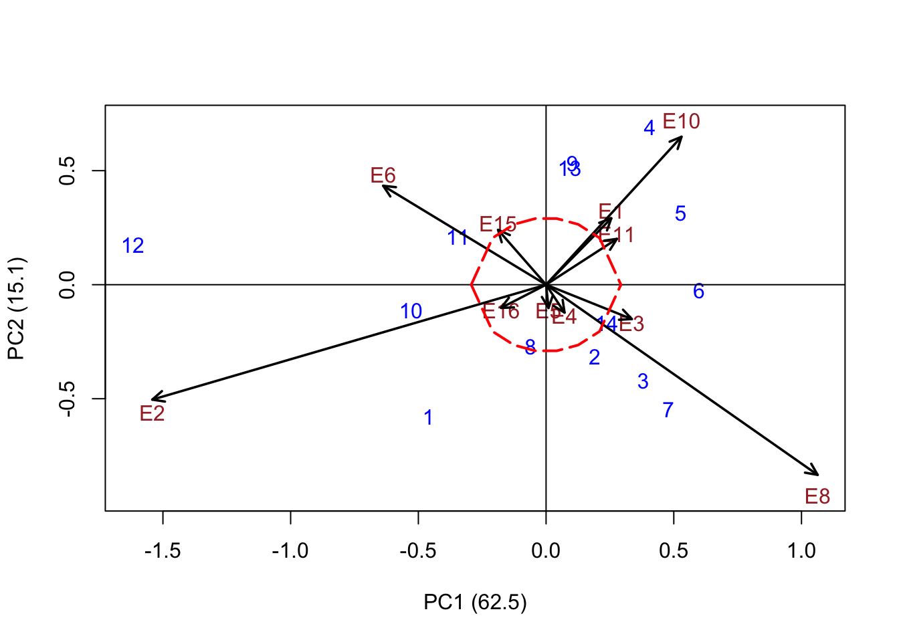
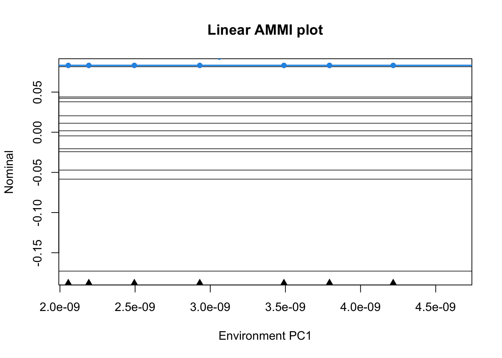

Last updated: 2021-03-28
Checks: 6 1
Knit directory: AnaliseR/
This reproducible R Markdown analysis was created with workflowr (version 1.6.2). The Checks tab describes the reproducibility checks that were applied when the results were created. The Past versions tab lists the development history.
The R Markdown file has unstaged changes. To know which version of the R Markdown file created these results, you’ll want to first commit it to the Git repo. If you’re still working on the analysis, you can ignore this warning. When you’re finished, you can run wflow_publish to commit the R Markdown file and build the HTML.
Great job! The global environment was empty. Objects defined in the global environment can affect the analysis in your R Markdown file in unknown ways. For reproduciblity it’s best to always run the code in an empty environment.
The command set.seed(20210324) was run prior to running the code in the R Markdown file. Setting a seed ensures that any results that rely on randomness, e.g. subsampling or permutations, are reproducible.
Great job! Recording the operating system, R version, and package versions is critical for reproducibility.
Nice! There were no cached chunks for this analysis, so you can be confident that you successfully produced the results during this run.
Great job! Using relative paths to the files within your workflowr project makes it easier to run your code on other machines.
Great! You are using Git for version control. Tracking code development and connecting the code version to the results is critical for reproducibility.
The results in this page were generated with repository version 10df00d. See the Past versions tab to see a history of the changes made to the R Markdown and HTML files.
Note that you need to be careful to ensure that all relevant files for the analysis have been committed to Git prior to generating the results (you can use wflow_publish or wflow_git_commit). workflowr only checks the R Markdown file, but you know if there are other scripts or data files that it depends on. Below is the status of the Git repository when the results were generated:
Ignored files:
Ignored: .Rhistory
Ignored: .Rproj.user/
Unstaged changes:
Modified: analysis/analiseConjuntaVA.Rmd
Note that any generated files, e.g. HTML, png, CSS, etc., are not included in this status report because it is ok for generated content to have uncommitted changes.
These are the previous versions of the repository in which changes were made to the R Markdown (analysis/analiseConjuntaVA.Rmd) and HTML (docs/analiseConjuntaVA.html) files. If you’ve configured a remote Git repository (see ?wflow_git_remote), click on the hyperlinks in the table below to view the files as they were in that past version.
| File | Version | Author | Date | Message |
|---|---|---|---|---|
| html | 10df00d | chris263 | 2021-03-25 | Build site. |
| Rmd | df218f9 | chris263 | 2021-03-25 | Joint Analysis |
Install packages, start the README.md, set the random seed
va <- read.csv("data/A427_converted.csv", sep = ",", header = T)
name_cols <- c("germplasmName", "Replication", "Location", "kgHa", "DollarKg", "DollarHa",
"IQS", "Talo", "TotalSuggar", "TotalAlcaloids")
colnames(va) <- name_cols
Traits <- colnames(va)[4:length(va)]
nTraits <- ncol(va) - 3
Treatments <- unique(va$germplasmName)
Locations <- unique(va$Location)
#This is the economic value for each trait
econValue <- c(1.5, 1.01, 1.45, 1.55, -1.25, -1.1, -1.16)
pre_result <- matrix(data = NA, nrow = nTraits, ncol = 3)
colnames(pre_result) <- c("h2", "varG", "varP")
rownames(pre_result) <- Traits
library("lme4")
library("emmeans")
#Centering the data - Function scale sets mean = 0
#It is important to scale the data in order to get a sum of different traits afterwards
va_centered <- va
for (i in 1:nTraits) {
va_centered[, 3 + i] <- scale(va[, i + 3], scale = TRUE)
}
for (i in 4:length(va_centered)) {
Pheno <- colnames(va_centered)[i]
model <- lmer(get(Pheno) ~ (1 | germplasmName) + (1 | Replication) + (1 | Location) +
(1 | germplasmName:Location), na.action = na.exclude, data = va_centered)
variance = as.data.frame(VarCorr(model))
gvar <- variance[2, "vcov"]
envar <- variance[3, "vcov"]
resvar <- variance[5, "vcov"]
addCor <- variance[2, "sdcor"]
phenovar <- gvar + envar + resvar
H2 = gvar/phenovar
pre_result[i - 3, 1] <- H2
pre_result[i - 3, 2] <- gvar
pre_result[i - 3, 3] <- phenovar
}
preresults_table <- knitr::kable(pre_result)
preresults_table| h2 | varG | varP | |
|---|---|---|---|
| kgHa | 0.0708469 | 0.0707958 | 0.9992790 |
| DollarKg | 0.2382930 | 0.2211305 | 0.9279773 |
| DollarHa | 0.2029126 | 0.2007283 | 0.9892356 |
| IQS | 0.2278214 | 0.2109315 | 0.9258634 |
| Talo | 0.2885476 | 0.2889656 | 1.0014486 |
| TotalSuggar | 0.0741628 | 0.0771881 | 1.0407916 |
| TotalAlcaloids | 0.3125941 | 0.3228502 | 1.0328094 |
Preparing for Pheno and Geno matrix Calculating regression coefficients
##regression coefficient - if necessary
# rP <- c()
# count=1
# for(i in 1:nTraits){
# t1 <- as.numeric(va[,i+3])
# var1 <- pre_result[i,3]
# if(i < nTraits){
# for (j in (i+1):nTraits){
# t2 <- as.numeric(va[,j+3])
# var2 <- pre_result[j,3]
# cal_rP <- var(t1,t2, na.rm = TRUE)/sqrt(var1*var2)
# rP[count] <- cal_rP
# count=count+1
# }
# }
# }
# 1 Phenotypic matrix
#The of diagonal is defined by the covariation between the traits.
# cov(1,2) = rP x sqrt(varPheno[1] x varPheno[2])
PhenoMatrix <- matrix(data = NA, ncol = nTraits, nrow = nTraits)
for (i in 1:nTraits) {
t1 <- as.numeric(va_centered[, i + 3])
if (i < nTraits) {
for (j in (i + 1):nTraits) {
t2 <- as.numeric(va_centered[, j + 3])
offDiagonal <- var(t1, t2, na.rm = TRUE)
PhenoMatrix[i, j] <- offDiagonal
PhenoMatrix[j, i] <- offDiagonal
}
}
PhenoMatrix[i, i] <- pre_result[i, 3]
}
# 2 Genotypic matrix
GenoMatrix <- diag(c(pre_result[, 2]))
# 3 Economic value
# Already defined as econValue
# Calculate the Index. It is a matrix with 1 column and nTraits rows
SelectionIndex <- solve(PhenoMatrix) %*% GenoMatrix %*% econValue
rownames(SelectionIndex) <- Traits
colnames(SelectionIndex) <- "Index"
print(SelectionIndex)
Index
kgHa -1.0200317
DollarKg 2.0116488
DollarHa 1.1858984
IQS -1.6080331
Talo -0.6123607
TotalSuggar -1.3899197
TotalAlcaloids -0.5495333Here I’m using the index to multiply by each trait. After that it will be possible make a rank.
library(dplyr)
library(tidyr)
#Calculate the index per germplasmName
preresults <- va_centered %>% group_by(germplasmName) %>% summarise(kgHa = mean(kgHa,
na.rm = TRUE), DollarKg = mean(DollarKg, na.rm = TRUE), DollarHa = mean(DollarHa,
na.rm = TRUE), IQS = mean(IQS, na.rm = TRUE), Talo = mean(Talo, na.rm = TRUE),
TotalSuggar = mean(TotalSuggar, na.rm = TRUE), TotalAlcaloids = mean(TotalAlcaloids,
na.rm = TRUE))
#Removing extra column with germplasmName
preresults <- data.matrix(subset(preresults, select = -c(germplasmName)))
#Naming rows and cols
colnames(preresults) <- Traits
rownames(preresults) <- Treatments
#Index Matrix has 1 column and the number of rows is the number of germplasmName
index_matrix <- preresults %*% SelectionIndex
# Creating a matrix with real average (not centered)
preresults2 <- va %>% group_by(germplasmName) %>% summarise(kgHa = mean(kgHa, na.rm = TRUE),
DollarKg = mean(DollarKg, na.rm = TRUE), DollarHa = mean(DollarHa, na.rm = TRUE),
IQS = mean(IQS, na.rm = TRUE), Talo = mean(Talo, na.rm = TRUE), TotalSuggar = mean(TotalSuggar,
na.rm = TRUE), TotalAlcaloids = mean(TotalAlcaloids, na.rm = TRUE))
preresults2 <- data.matrix(subset(preresults2, select = -c(germplasmName)))
#print(index_matrix)
# Result matrix has all traits + selection index
results <- as.data.frame(cbind(preresults2, index_matrix))
results <- results[order(results$Index, decreasing = TRUE), ]
#Print the result with Rmarkdown
results_table <- knitr::kable(results)
results_table| kgHa | DollarKg | DollarHa | IQS | Talo | TotalSuggar | TotalAlcaloids | Index | |
|---|---|---|---|---|---|---|---|---|
| 2 | 4006.970 | 3.064545 | 12239.588 | 67.01515 | 28.86515 | 12.87576 | 3.286667 | 0.7989638 |
| 5 | 4061.879 | 3.314545 | 13469.310 | 73.61515 | 30.11636 | 14.92727 | 3.359091 | 0.4829939 |
| 6 | 4154.939 | 3.260606 | 13545.349 | 71.46667 | 30.43152 | 14.67879 | 3.311818 | 0.4589203 |
| 4 | 4075.606 | 3.180303 | 12990.008 | 68.75152 | 29.09000 | 14.09697 | 3.780909 | 0.4484802 |
| 9 | 3912.344 | 3.195625 | 12466.723 | 72.58437 | 30.98194 | 13.12903 | 3.296129 | 0.2334193 |
| 10 | 3904.485 | 2.908485 | 11373.517 | 64.38788 | 30.89545 | 12.35455 | 3.033030 | 0.0088055 |
| 1 | 4109.091 | 2.938485 | 12055.652 | 63.18788 | 31.42061 | 12.67576 | 3.215152 | -0.0787915 |
| 12 | 3606.606 | 2.613939 | 9496.347 | 55.07879 | 31.29970 | 10.26970 | 3.378788 | -0.1506069 |
| 11 | 4060.333 | 3.073939 | 12507.655 | 66.46667 | 32.50303 | 12.43939 | 3.790000 | -0.2862362 |
| 14 | 3970.758 | 3.038182 | 12038.190 | 66.76667 | 30.71909 | 13.02121 | 3.755758 | -0.3246390 |
| 13 | 4020.273 | 3.157879 | 12701.920 | 69.01212 | 32.31121 | 13.01212 | 3.919394 | -0.3482980 |
| 7 | 4154.182 | 3.143333 | 13064.612 | 69.04242 | 32.43212 | 12.41818 | 3.991515 | -0.3890375 |
| 3 | 4254.242 | 3.156667 | 13419.774 | 68.10909 | 32.28091 | 13.25758 | 3.980909 | -0.4142106 |
| 8 | 4108.455 | 3.144242 | 12911.744 | 68.28182 | 33.16606 | 12.51515 | 3.941212 | -0.4247745 |
This is using Bilinear sowftware
library("Bilinear")
# # Prepare a matrix with mean of treatments per location
preStability <- data.matrix(va %>% group_by(Location, germplasmName) %>% summarise(kgHa = mean(kgHa,
na.rm = TRUE), DollarKg = mean(DollarKg, na.rm = TRUE), DollarHa = mean(DollarHa,
na.rm = TRUE), IQS = mean(IQS, na.rm = TRUE), Talo = mean(Talo, na.rm = TRUE),
TotalSuggar = mean(TotalSuggar, na.rm = TRUE), TotalAlcaloids = mean(TotalAlcaloids,
na.rm = TRUE)))
Stability <- preStability[, 3:9] %*% SelectionIndex
Stability <- cbind(preStability[, 2], preStability[, 1], Stability)
colnames(Stability) <- c("germplasmName", "Location", "Index")
rownames(Stability) <- preStability[, 2]
Stability <- tapply(Stability[, 3], list(Stability[, 1], Stability[, 2]), mean)
AMMI_Index <- bilinear(x = Stability, verbose = F)
#Stability using a specific trait
Trt <- tapply(va$DollarKg, list(va$germplasmName, va$Location), mean)
AMMI_Trt <- bilinear(x = Trt, verbose = F)
AMMIplot(AMMI_Trt)
# abline(v=-0.05, col='red')
# abline(v=+0.05, col='red')
# AMMIplot(AMMIfit, PC=2)
library("agricolae")
## Exemple: mmodel<- with(va,AMMI(Location, germplasmName, Replication, DollarHa, console=FALSE))
Stability_AMMI <- data.matrix(va_centered[, 4:10]) %*% SelectionIndex
va_centered <- cbind(va_centered, Stability_AMMI)
colnames(va_centered) <- c(name_cols, "Index")
model <- with(va_centered, AMMI(Location, germplasmName, Replication, Index, console = TRUE))
model$ANOVA
# # see help(plot.AMMI)
# # biplot
plot(model)
AMMI.contour(model, distance = 0.398, shape = 8, col = "red", lwd = 2, lty = 5)
# # triplot PC 1,2,3
# plot(model, type=2, number=TRUE)
# # biplot PC1 vs Yield
# plot(model, first=0,second=1, number=TRUE)
# # Example 2
Analysis of Variance Table
Response: y
Df SS MS testStat Pvalue
E 10 346841080.9 34684108.09 38.60015 3.352979e-34 ***
G 13 172685742.1 13283518.62 14.78331 6.282633e-20 ***
PC1 22 52839538.1 2401797.19 0.00000 < 1e-04 ***
PC2 20 14602248.3 730112.41 9967.00000 9.967000e-01
PC3 18 13594573.4 755254.08 9509.00000 9.509000e-01
PC4 16 11398379.8 712398.74 8652.00000 8.652000e-01
PC5 14 9087132.5 649080.89 7380.00000 7.380000e-01
PC6 12 6493252.4 541104.37 7040.00000 7.040000e-01
PC7 10 5130129.5 513012.95 2734.00000 2.734000e-01
PC8 8 2843701.3 355462.66 832.00000 8.320000e-02
PC9 6 657253.0 109542.17 4045.00000 4.045000e-01
PC10 4 165103.1 41275.78 NA
---
Signif. codes: 0 '***' 0.001 '**' 0.01 '*' 0.05
Number of significant multiplicative terms : 1
Analysis of Variance Table
Response: y
Df SS MS testStat Pvalue
E 10 8.61503463 0.861503463 32.26864 1.376723e-30 ***
G 13 4.35352670 0.334886669 12.54358 2.043459e-17 ***
PC1 22 1.88437793 0.085653542 0.00000 < 1e-04 ***
PC2 20 0.49336774 0.024668387 4806.00000 4.806000e-01
PC3 18 0.37374472 0.020763595 4373.00000 4.373000e-01
PC4 16 0.23304299 0.014565187 8340.00000 8.340000e-01
PC5 14 0.19932353 0.014237395 4875.00000 4.875000e-01
PC6 12 0.13221745 0.011018121 4900.00000 4.900000e-01
PC7 10 0.07587707 0.007587707 6728.00000 6.728000e-01
PC8 8 0.04475559 0.005594449 7034.00000 7.034000e-01
PC9 6 0.02880638 0.004801064 2620.00000 2.620000e-01
PC10 4 0.00520753 0.001301882 NA
---
Signif. codes: 0 '***' 0.001 '**' 0.01 '*' 0.05
Number of significant multiplicative terms : 1
ANALYSIS AMMI: Index
Class level information
ENV: E1 E2 E3 E4 E5 E6 E8 E10 E11 E15 E16
GEN: 1 2 3 4 5 6 7 8 9 10 11 12 13 14
REP: 1 2 3
Number of observations: 460
model Y: Index ~ ENV + REP%in%ENV + GEN + ENV:GEN
Random effect REP%in%ENV
Analysis of Variance Table
Response: Y
Df Sum Sq Mean Sq F value Pr(>F)
ENV 10 122.271 12.2271 18.7395 1.568e-08 ***
REP(ENV) 22 14.354 0.6525 1.1665 0.2773
GEN 13 72.536 5.5797 9.9755 < 2.2e-16 ***
ENV:GEN 130 142.228 1.0941 1.9560 1.697e-06 ***
Residuals 284 158.852 0.5593
---
Signif. codes: 0 '***' 0.001 '**' 0.01 '*' 0.05 '.' 0.1 ' ' 1
Coeff var Mean Index
17608.63 0.004247284
Analysis
percent acum Df Sum.Sq Mean.Sq F.value Pr.F
PC1 42.3 42.3 22 60.147939 2.733997 4.89 0.0000
PC2 18.5 60.8 20 26.328474 1.316424 2.35 0.0012
PC3 14.9 75.7 18 21.148760 1.174931 2.10 0.0061
PC4 8.6 84.2 16 12.180547 0.761284 1.36 0.1609
PC5 5.8 90.0 14 8.232009 0.588001 1.05 0.4037
PC6 4.1 94.2 12 5.859328 0.488277 0.87 0.5781
PC7 3.7 97.9 10 5.311448 0.531145 0.95 0.4877
PC8 1.4 99.3 8 1.986085 0.248261 0.44 0.8964
PC9 0.6 99.9 6 0.854278 0.142380 0.25 0.9591
PC10 0.1 100.0 4 0.165209 0.041302 0.07 0.9910
Analysis of Variance Table
Response: Y
Df Sum Sq Mean Sq F value Pr(>F)
ENV 10 122.271 12.2271 18.7395 1.568e-08 ***
REP(ENV) 22 14.354 0.6525 1.1665 0.2773
GEN 13 72.536 5.5797 9.9755 < 2.2e-16 ***
ENV:GEN 130 142.228 1.0941 1.9560 1.697e-06 ***
Residuals 284 158.852 0.5593
---
Signif. codes: 0 '***' 0.001 '**' 0.01 '*' 0.05 '.' 0.1 ' ' 1
Limit, radio: 0.5535593
Genotype in: 7
Genotype out: 7
$`GENOTYPE IN`
[1] "1" "11" "13" "3" "4" "5" "7"
$`GENOTYPE OUT`
[1] "10" "12" "14" "2" "6" "8" "9"
$Distance
distance
1 0.13001093
10 1.19777180
11 0.35730955
12 1.39085250
13 0.23691562
14 0.64931204
2 0.60670857
3 0.49362653
4 0.03788082
5 0.48967732
6 0.64500299
7 0.16301523
8 0.91708731
9 1.14544084
| Version | Author | Date |
|---|---|---|
| 10df00d | chris263 | 2021-03-25 |

Note that the echo = FALSE parameter was added to the code chunk to prevent printing of the R code that generated the plot.
sessionInfo()
R version 4.0.3 (2020-10-10)
Platform: x86_64-apple-darwin17.0 (64-bit)
Running under: macOS Big Sur 10.16
Matrix products: default
BLAS: /Library/Frameworks/R.framework/Versions/4.0/Resources/lib/libRblas.dylib
LAPACK: /Library/Frameworks/R.framework/Versions/4.0/Resources/lib/libRlapack.dylib
locale:
[1] en_US.UTF-8/en_US.UTF-8/en_US.UTF-8/C/en_US.UTF-8/en_US.UTF-8
attached base packages:
[1] stats graphics grDevices utils datasets methods base
other attached packages:
[1] agricolae_1.3-3 Bilinear_0.2.2 tidyr_1.1.2 dplyr_1.0.2
[5] emmeans_1.5.5-1 lme4_1.1-26 Matrix_1.3-2
loaded via a namespace (and not attached):
[1] statmod_1.4.35 tidyselect_1.1.0 xfun_0.20 purrr_0.3.4
[5] haven_2.3.1 splines_4.0.3 lattice_0.20-41 labelled_2.7.0
[9] vctrs_0.3.6 generics_0.1.0 miniUI_0.1.1.1 htmltools_0.5.1
[13] yaml_2.2.1 AlgDesign_1.2.0 rlang_0.4.10 later_1.1.0.1
[17] pillar_1.4.7 nloptr_1.2.2.2 glue_1.4.2 questionr_0.7.4
[21] lifecycle_0.2.0 stringr_1.4.0 combinat_0.0-8 workflowr_1.6.2
[25] mvtnorm_1.1-1 coda_0.19-4 evaluate_0.14 forcats_0.5.0
[29] knitr_1.30 fastmap_1.0.1 httpuv_1.5.4 highr_0.8
[33] Rcpp_1.0.6 xtable_1.8-4 readr_1.4.0 promises_1.1.1
[37] formatR_1.7 mime_0.9 fs_1.5.0 klaR_0.6-15
[41] hms_0.5.3 digest_0.6.27 stringi_1.5.3 shiny_1.5.0
[45] grid_4.0.3 rprojroot_2.0.2 here_1.0.1 tools_4.0.3
[49] magrittr_2.0.1 tibble_3.0.4 cluster_2.1.0 crayon_1.3.4
[53] whisker_0.4 pkgconfig_2.0.3 ellipsis_0.3.1 MASS_7.3-53
[57] estimability_1.3 minqa_1.2.4 rmarkdown_2.6 rstudioapi_0.13
[61] R6_2.5.0 boot_1.3-25 nlme_3.1-151 git2r_0.28.0
[65] compiler_4.0.3